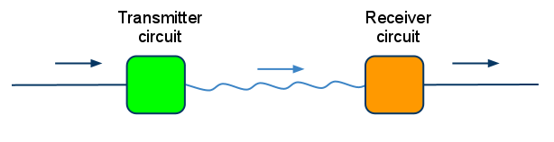
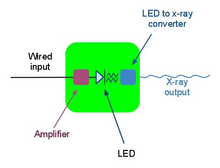
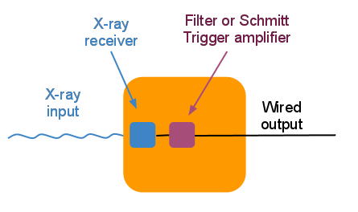

Statement of Work
We will couple a high speed digital RS232 communication infrastructure to the MXS transceiver. Our system will drive a 255 nm UV LED with 20 mA (and the capability of driving 10 parallel LEDs with 200 mA), and will filter and amplify the output of the x-ray transceiver.
Overview of Project
Wired RS232
Wired digital communication between two devices has been possible for a while. For example, the RS232 standard originated in 1962. RS232 uses two unidirectional lines (transmit and receive) to transfer data. Below we can see two computers communicating via RS232. Device "A" sends data along one line to device "B," while device "B" sends data along another line to device "A."
Clipping the wires
Our goal is to snip the RS232 line in half, and bridge the gap with a wireless x-ray transceiver. In the following diagram you can see that two unidirectional x-ray transceivers have been inserted in between the RS232 wires.
But we only have one transceiver
We are currently limited by hardware to transmitting wirelessly in one direction, thus we must use the transceiver to transmit data from computer "A" to computer "B," but use a wired link to transmit back the other way
Let's take a closer look
There are two main circuits needed: a transmitter and a receiver. The transmitter circuit needs to take a wired input, and output an x-ray signal. The receiver circuit must take an x-ray signal input, and output a voltage to a wire.
Transmitter circuit
The input voltage to the transmitter must be converted into a signal capable of driving an LED, which, through the photoelectric effect, will drive an electron beam which will create x-rays when it hits a target. To convert the wired input signal from RS232 to something capable of driving a specific LED, an amplifier is needed to ensure it outputs the correct current.
Receiver circuit
The X-ray receiver (already built) takes an x-ray signal and outputs a voltage. Due to the nature of the receiver, this output voltage is very weak (on the order of 50 mV) and noisy, so it must be converted into a clean, strong signal before it is sent back to an RS232 device.
